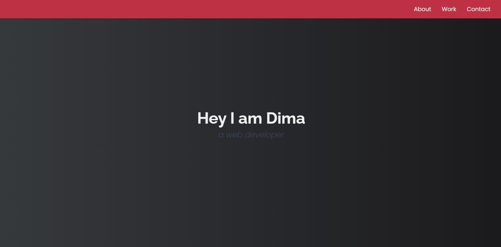

After ending my studying at university, I worked as a designer for 6 years. After that for 2 years as a sales manager. But I only dreamed about programming, not only as a hobby, but also as a job. That's why I decided totally to change my life. and began to study, study, study... There is no turning back, only forward
Skills
- HTML
- CSS (SCSS, BEM)
- JavaScript (Fundamentals, ES6+, DOM)
- Git/GitHub
- Figma
- Autocad
- SolidWorks
Education
- National Technical University of Ukraine "Kyiv Polytechnic Institute.
- chemical engineering
-
Freecodecamp courses
- HTML/CSS
- JavaScript
-
Alexander Lushenko courses
- JavaScrtipt v2.0
Languages
- English - B1-B2
- Ukrainian - native speaker
- Russian - native speaker
Dmytro Zozuliak
Junior Front-end developer
About Me
experience
-
Kyiv Electrotechnical Company, LLC. TM Euroluki 2012-2018
-
Designer of hidden hatches
-
Design drawings, specifications for products. Using such programs as Autocad and SolidWorks.
-
Brayval-coffee 2018-2021
-
Sales manager
-
Was engaged in the sale of coffee equipment, rental of coffee machines
my works
-
Some of my projects which collected in landing page
- 
-
Code Examples
-
// Find the stray number
function stray(numbers) {
let sorted = numbers.sort((a, b) => a - b);
if (sorted[0] === sorted[1]) return sorted.pop();
else return sorted.shift();
}
console.log(stray([0, 17, 17, 17, 17]));